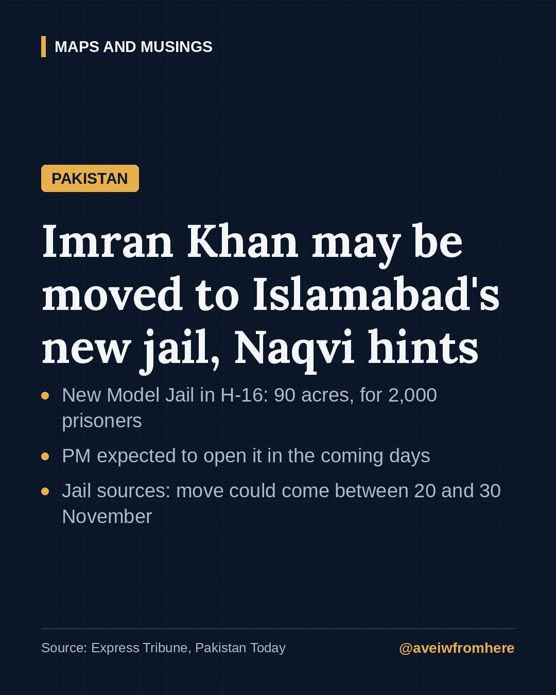

Imran Khan may be moved to Islamabad's new Model Jail: what we know
Interior Minister Mohsin Naqvi has hinted that the PTI founder could be shifted from Adiala to Islamabad's first purpose-built prison, which is about to open after 17 years of delays.

Former prime minister and PTI founder Imran Khan could soon leave Adiala Jail in Rawalpindi, where he has been held for more than two years.
On Tuesday, 27 October, Interior Minister Mohsin Naqvi visited Islamabad's new Model Central Jail and was asked directly whether Imran Khan would be moved there. "My specific answer is that whosoever is a prisoner of Islamabad will be shifted here," he said, according to the Express Tribune and Pakistan Today.
Islamabad's first real prison
It may surprise many people that the federal capital has never had a working prison of its own. Prisoners from Islamabad are held at Adiala, in neighbouring Rawalpindi, which is in Punjab.
The new jail is meant to change that:
- Location: Sector H-16, Islamabad
- Size: 90 acres
- Capacity: designed for 2,000 inmates
- First phase: about 1,500 prisoners, with three completed barracks, a 35-bed mini-hospital, a mosque and a kitchen
- Second phase: room for roughly 3,000 to 4,000 prisoners
- Planned facilities: separate barracks for women and juveniles, a full hospital, a library, vocational training centres, courtrooms and staff housing
Work began in 2009 and construction started in 2016. Naqvi said the project had been "pending for 17 years" and that when he visited in 2024, it was only 40 to 50 percent complete and had "nearly been abandoned". He credited Minister of State Talal Chaudhry and the Capital Development Authority for finishing it.
When could the move happen?
Naqvi said the jail is ready and that Prime Minister Shehbaz Sharif is expected to inaugurate it "in the next few days", after which prisoners will be transferred.
According to jail sources quoted by the Express Tribune, Imran Khan could be moved between 20 and 30 November. A special ward for him has reportedly been completed, and CCTV is being installed.
This is not the first time the idea has been raised. In February, Naqvi said that anyone sentenced by Islamabad courts would be brought to the new jail once it opened.
Imran Khan's legal situation
Imran Khan has been in prison since August 2023. He is serving a sentence in the £190 million case, which he and his party describe as politically motivated, and he faces pending trials under the Anti-Terrorism Act over the protests of 9 May 2023.
The reports on Naqvi's visit did not include a response from PTI. The party's parliamentary leaders have continued to demand his release, and have also called for an end to the emergency rule imposed in PTI-governed Khyber Pakhtunkhwa on 11 October.
Why it matters
For Imran Khan's family, lawyers and supporters, where he is held affects access to him: visits, legal meetings and court hearings. Adiala has been the scene of repeated disputes over such access. A move to a new, purpose-built prison in the capital could change those arrangements, for better or worse. For now, the government has not given a firm date, and the timing will depend on when the jail is formally opened.